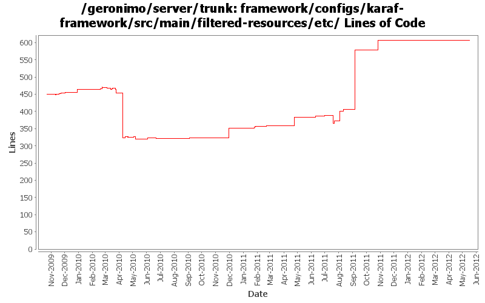

[root]/framework/configs/karaf-framework/src/main/filtered-resources/etc

| Author | Changes | Lines of Code | Lines per Change |
|---|---|---|---|
| Totals | 118 (100.0%) | 521 (100.0%) | 4.4 |
| genspring | 8 (6.8%) | 188 (36.1%) | 23.5 |
| gawor | 49 (41.5%) | 113 (21.7%) | 2.3 |
| djencks | 15 (12.7%) | 75 (14.4%) | 5.0 |
| rwonly | 11 (9.3%) | 64 (12.3%) | 5.8 |
| rickmcguire | 18 (15.3%) | 51 (9.8%) | 2.8 |
| xuhaihong | 6 (5.1%) | 17 (3.3%) | 2.8 |
| violalu | 5 (4.2%) | 6 (1.2%) | 1.2 |
| xiaming | 3 (2.5%) | 4 (0.8%) | 1.3 |
| kevan | 2 (1.7%) | 2 (0.4%) | 1.0 |
| dblevins | 1 (0.8%) | 1 (0.2%) | 1.0 |
Merge 1333350,1333352,1334031,1334300,GERONIMO-6345,GERONIMO-6348 into trunk
0 lines of code changed in 1 file:
GERONIMO-6205 karaf features.core need a org.apache.karaf.features.cfg in etc
29 lines of code changed in 1 file:
GERONIMO-5987 use our fork of Aries blueprint 0.3 in ext, with the patch in ARIES 727
1 lines of code changed in 1 file:
GERONIMO-6139 Support Java 1.7 Runtime, use Ivan's proposal to add a profile for jre 1.7.
173 lines of code changed in 1 file:
GERONIMO-6119 upgrade geronimo-system to use commons-jexl 2.0
1 lines of code changed in 1 file:
Make aries.util.version in jar file consistent with version in path.
1 lines of code changed in 1 file:
Enable cleanupOnOpen and cleanupOnSave configurations
7 lines of code changed in 1 file:
make sure com.ibm.oti.* is in org.osgi.framework.bootdelegation
1 lines of code changed in 1 file:
comment this for now because it blocks server from starting.
1 lines of code changed in 1 file:
YOKO-434 export all the corba spec packages from the framework
27 lines of code changed in 1 file:
YOKO-434 expose another corba package from framework
1 lines of code changed in 1 file:
Enable temp files cleanup function in the new 3.7.1.R37x_v20110726 version
5 lines of code changed in 1 file:
commons-lang was upgraded to 2.6
1 lines of code changed in 1 file:
Add jta spec on the startup, as it is required by jms spec
1 lines of code changed in 1 file:
GERONIMO-5893 use a start level for the config we start so it starts after features. Start a few more bundles in startup properties so they are more sure to get started early enough
15 lines of code changed in 1 file:
GERONIMO-5893 start a lot of bundles as a karaf feature so they don't necessarily get added to geronimo dependency tracking
9 lines of code changed in 2 files:
geronimo-stax-api_1.2_spec-1.1 was released.
1 lines of code changed in 1 file:
move to released version of equinox 3.7
1 lines of code changed in 1 file:
make bootdelegation of com.ibm.* to more accurate form com.ibm.security.*
1 lines of code changed in 1 file:
GERONIMO-5973 jmx-security module start failure. "java.lang.ClassNotFoundException: javax.rmi.ssl.SslRMIClientSocketFactory"
1 lines of code changed in 1 file:
GERONIMO-6030 Server can not shutdown using shutdown script
3 lines of code changed in 1 file:
Remove ,org.apache.xpath,org.apache.xml.utils from bootdelegate list
1 lines of code changed in 1 file:
Add org.apache.xpath and org.apache.xml.utils package in ibm jdk to bootdelegate list
1 lines of code changed in 1 file:
add more accurate packege in ibm jdk to bootdelegate list: org.apache.xpath.*
1 lines of code changed in 1 file:
export org.apache.* in ibm jdk such as org.apache.xpath.*
1 lines of code changed in 1 file:
add com.ibm.* and org.apache.harmony.* in the boot delegation list
1 lines of code changed in 1 file:
GERONIMO-6007 Upgrade woodstox version to 4.1.1
2 lines of code changed in 1 file:
Do not need to manually set the framework beginning start level
3 lines of code changed in 1 file:
Update geronimo-osgi-registry to 1.1-SNAPSHOT in the startup configuration file
1 lines of code changed in 1 file:
Avoid RMI classloader error during startup
1 lines of code changed in 1 file:
GERONIMO-5793 make config properties overridable
25 lines of code changed in 3 files:
GERONIMO-5793 OSGI Bundle "Stop" doesn't work according to Hot deployed "HelloWorld" osgi bundle sample
1 lines of code changed in 2 files:
GERONIMO-5885 Upgrade karaf from 2.1.2 to 2.2.1-SNAPSHOT
2 lines of code changed in 1 file:
GERONIMO-5815 still change to use yoko 1.2 snapshot, but add a fix to endorsed package so that UtilLoader in yoko-rmi-spec could be resolved by yoko-rmi-impl bundle
1 lines of code changed in 1 file:
GERONIMO-5801 need to update jaxb-impl version in startup.properties as well
1 lines of code changed in 1 file:
update comments and sync configuration with karaf configuration
9 lines of code changed in 1 file:
GERONIMO-5779: Karaf shell command for diagnosing resolver problem (for Equinox only)
1 lines of code changed in 1 file:
osgi.bundlefile.limit is a Equinox property
2 lines of code changed in 1 file:
Remove bundle file number limit
3 lines of code changed in 1 file:
GERONIMO-5702: Update for Karaf 2.1.2. Based on patch from Viola Lu
47 lines of code changed in 4 files:
(64 more)